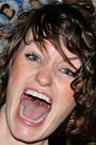

People
Danny Wedel and Mallory Warren
Danny and Mallory met at UW-Madison in the Wisconsin Singers student performing group in 2007. Mal was a singer/dancer when Danny joined the group as an audio engineer, and they had an almost instant connection. Within months of meeting the two were basically attached at the hip, as they both discovered their compatibility and common values: sharing a love of music, being with friends, playing games, and enjoying a generally positive outlook on life! After Danny graduated in 2009, he and Mal continued to play music together in local bands: Aisle 9 and later, The Campaign. In 2011, Mal's senior year, they added a special member to their family-to-be: a little, 4-month old, rescued pit bull puppy that they named Zaida. After Mal graduated college, the three moved in together on the West-side of Madison.
Danny and Mal have been working in downtown Madison for the past several years, and have enjoyed being able to meet for lunch, happy hours and farmer's markets together. Danny finally popped the question at one of their favorite summer events, Concerts on the Square, in July 2013. They're thrilled that they will be surrounded by their families and best friends for a celebration of a love that's been brewing for the past 7 years!
Groomsmen
| Joey Wedel | Danny’s (evil) twin brother and mandatory best man, hiking through all the wedding planning | |
| Alex Gebhart | Former bandmate, neighborhood buddies dating back to the 4th grade and genuinely good-guy | |
| Peter Goitom | College roommate and general partner in crime | |
| Travis Klausmeier | College roommate, master persuader, enticing you to do things even though you shouldn't | |
| Mike Andersen | Starving artist, pool shark, and a guy who is always down for a good time | |
| Dave Burney | Former bandmate, old gymnastics teammate and the long-lost speedo-man |
Bridesmaids
| Kirstie Warren | Mal’s younger sister-but-could-be-her-twin, best friend and co-Beyonce addict. Will most definitely win any karaoke contest or dance off she is challenged to. | |
| Carolyn Edlebeck | Friend since 4th grade, college roommate and the girl who will keep the party going all night. Will also probably be President of the United States one day. | |
| Jamie Brayton | Friend since 1st grade, skating, dance team and gossip bud, and girl who will probably have the most genuine ugly-cry face on 10.4.14. | |
| Sasha Gasparian | College roommate and the most organized and knowledgeable person on party etiquette and life in general. Just don’t say dumb things or ask dumb questions. | |
| Kala Grove |  | Friend through high school-turned college roommate and a skilled debater of all subjects pertaining to life, happiness, friendship and where to find the best beer in town. |
| Maren Larsen | Co-Tangled Up In Blue member who somehow manages to keep Danny and Mal (and her niece Zaida) in her thoughts despite the fact she has lived abroad for more years than she’s lived in the U.S. since college. |
Officiant & Honorary Groomsman
| Joe Harper | Scholarly, enthusiastic, and thoughtful friend. We couldn’t think of a person who we would enjoy more to marry us! |